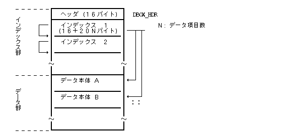
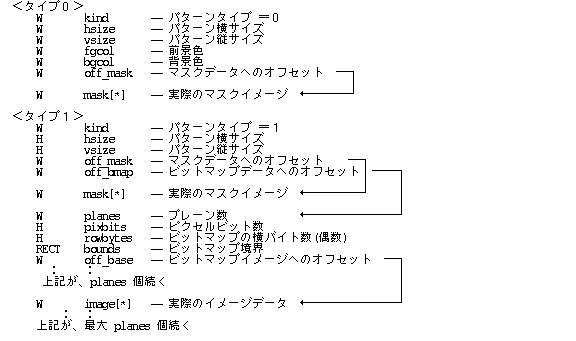

データマネージャは、外殻の 1 つとして位置付けられ、 HMI マネージャ群や、 アプリケーションプログラムで使用する固定的なデータ群をプログラムと切り離した「データボックス」として定義しておき、 その内に存在するデータ項目を効率的かつ統一的に取り扱う手段を提供している。 データマネージャ自体はデータボックスを作成する機能は持たない。
データボックスは、以下の 2 種に大別される。
システムで標準的に共通使用するデータ群を登録した、 システムに唯一存在するデータボックス。
アプリケーション(群)で固有に使用するデータ群を登録したデータボックスで、 アプリケーション(群)毎に定義される。
データボックスに登録されている 1 つのデータ項目は、 データタイプIDとデータ番号で識別される。 データタイプIDはデータのカテゴリを示すものであり、 データ番号は 1 つのデータタイプ内でユニークに付けられた番号 ( > 0 ) である。
データタイプIDとしては以下のものが規定されている。
PTR_DATA | ( 1) | ポインタイメージ |
PICT_DATA | ( 2) | ピクトグラムイメージ |
PAT_DATA | ( 3) | パターンデータ |
BMAP_DATA | ( 4) | 図形ビットマップデータ |
FIG_DATA | ( 5) | 図形セグメントデータ |
TEXT_DATA | ( 6) | 文字列データ |
PARTS_DATA | ( 7) | コントロールКомпоненти графічного інтерфейсу定義データ |
MENU_DATA | ( 8) | 標準Меню та командні інтерфейси定義データ |
GMENU_DATA | ( 9) | 汎用Меню та командні інтерфейси定義データ |
PANEL_DATA | (10) | Системні панелі (Panels)定義データ |
USER_DATA | (64〜) | ユーザ定義データ |
ユーザ定義データは、 特定のアプリケーション(群)で使用されるデータタイプであり、 64 以上の任意のタイプIDをつけて使用することができる。
各データタイプID毎にデータ構造が定義されているが、 一部のタイプを除いてその内容はデータマネージャとしては関知しない。
データマネージャを使用するために、 アプリケーションは、まず対象とするデータボックス ( システムデータボックスを含む ) をすべてオープンする。この結果、 各アプリケーション ( Процеси та потоки ) 毎に対象とするデータボックスが別々に管理される。 ただし、システムデータボックスはすべてのアプリケーションで共通の対象となる。
アプリケーションが、データタイプIDとデータ番号を指定して、 データ項目の参照要求を行なった場合、 データマネージャは、 そのアプリケーションがオープンしたデータボックスを順番にサーチして、 要求されたデータ項目が存在するか否かをチェックする。 データボックスのサーチは、オープンした逆順に行なわれ、 システムデータボックスは常に一番最後になる。 従って、同一データタイプID、同一データ番号を使用することにより、 あるデータ項目をアプリケーション固有の別のデータ項目で再登録することができる。
要求されたデータ項目が存在する場合は、 そのデータ項目を共有メモリ上で参照できるようにしてそのメモリアドレスをアプリケーションに戻す。 既に共有メモリ上で参照できる状態にあった場合は単にその領域のアドレスをアプリケーションに戻すことになる。 この場合は、複数のアプリケーション間で、そのデータ項目を共用していることになる。
データマネージャにより共有メモリ上にロードされたデータは、 他のアプリケーションからも参照される可能性があるため、 直接変更してはいけない。 書き込みの保護はされていないため、 アプリケーション側でこの点を注意しなくてはならない。 変更したい場合は、別領域にコピーする必要がある。
データボックスはファイルの1つのレコードとして定義される。 レコードタイプは「データボックス」タイプとなる。
通常、1 つのデータボックスは、独立した 1 つのファイルとして定義されるが、 1 つのファイルの中に複数のデータボックスを入れる場合や、 別のレコードと混在している場合もある。
システムデータボックスは1つのファイルとして独立しており、 固定的なファイルパスを持ち、 アプリケーションデータボックスはアプリケーションがそのファイルパスを指定するため、 基本的にどこに存在してもよいが、 通常は、アプリケーションプログラムファイル内に置くことが多い。
データボックスは大きくインデックス部とデータ部から構成され、 全体として以下に示す構造を持つ。

インデックス部はヘッダと、 そのデータボックスが含む各データタイプID毎のインデックスから構成され、 基本的にオープンされた時点でデータマネージャの管理するメモリ領域上にロードされる。
インデックス部はヘッダと、 そのデータボックスが含む各データタイプID毎のインデックスから構成され、 基本的にオープンされた時点でデータマネージャの管理するメモリ領域上にロードされる。
ヘッダは16バイトの以下の構造を持つ。
typedef struct {
H ntyp; /* ボックス内のデータタイプIDの数 */
H ixsize; /* インデックス部の総バイト数 */
H resv[6]; /* 予約 */
} DBOX_HDR;
各データタイプ毎のインデックスは、以下の構造を持つ。
typedef struct {
W npos; /* 次のタイプのインデックスへのオフセット */
W typ; /* データタイプID */
UW attr; /* データの属性(未使用) */
W nd; /* このタイプに属するデータ項目の数 */
DNUM_INX dix[1]; /* 項目インデックス配列 (nd 個の要素) */
} DTYP_INX;
attr: xxxx .. xxxx xxxL
L: プレロード指定
x:
項目インデックスは20バイトの、 各データ項目に対応するインデックスで、 データ部に含まれるデータ本体へのオフセット、 およびサイズを保持している。
typedef struct {
W id; /* データ番号 */
W pos; /* 対応するデータ本体へのオフセット */
W size; /* データ本体のバイトサイズ */
W info[2]; /* 内部使用領域 */
} DNUM_INX;
1 つのデータボックスに入るインデックスの数に特に制限はないが、 インデックス部全体のバイト数は 32K バイト以下でなくてはいけない。 また、同一タイプのインデックスが複数含まれていても問題ないが、 なるべく 1 つにまとまっている事が望ましい。
データ本体はそのデータタイプに依存した構造を持つが、 データマネージャは一部のデータタイプを除いて、 その構造には関知せず、単なるバイトデータ列として取り扱う。
#define PTR_DATA 1 /* ポインタイメージ */ #define PICT_DATA 2 /* ピクトグラムイメージ */ #define PAT_DATA 3 /* パターンデータ */ #define BMAP_DATA 4 /* 図形ビットマップデータ */ #define FIG_DATA 5 /* 図形セグメントデータ */ #define TEXT_DATA 6 /* 文字列データ */ #define PARTS_DATA 7 /* Компоненти графічного інтерфейсу定義データ */ #define MENU_DATA 8 /* 標準Меню та командні інтерфейси定義 */ #define GMENU_DATA 9 /* 汎用Меню та командні інтерфейси定義 */ #define PANEL_DATA 10 /* Системні панелі (Panels)定義 */ #define USER_DATA 64 /* ユーザ定義データ */
typedef struct {
H ntyp; /* ボックス内のデータタイプIDの数 */
H ixsize; /* インデックス部の総バイト数 */
H resv[6];
} DBOX_HDR;
typedef struct {
W id; /* データ番号 */
W pos; /* 対応するデータ本体へのオフセット */
W size; /* データ本体のバイトサイズ */
W info[2]; /* 内部使用領域 */
} DNUM_INX;
typedef struct {
W npos; /* 次のタイプのインデックスへのオフセット */
W typ; /* データタイプID */
UW attr; /* データの属性(未使用) */
W nd; /* このタイプに属するデータ項目の数 */
DNUM_INX dix[1]; /* 項目インデックス配列 (nd 個の要素) */
} DTYP_INX;
PTR_DATA)
ポインタイメージは、以下の様な構造を持つデータであり、
hotpt 以降は、
ディスプレイプリミティブで定義されている PTRIMAGE
タイプに等しい。
W p_size -- ポインタサイズ (ピクセル数)
COLOR fgcol -- 前景色
COLOR bgcol -- 背景色
PNT hotpt -- ホットポイント位置
B data[P_SIZE] -- データパターン
B mask[P_SIZE] -- マスクパターン
P_SIZE はポインタサイズにより異なり、以下のようになる。
16 x 16 の場合 : 32
24 x 24 の場合 : 96
32 x 32 の場合 : 128
48 x 48 の場合 : 288
データ番号0〜99は、システムで使用するために予約されているものとする。
0 : (PS_SELECT): 選択指
1 : (PS_MODIFY): 修正選択指
2 : (PS_MOVE) : 移動手
3 : (PS_VMOVE) : 移動手(縦方向)
4 : (PS_HMOVE) : 移動手(横方向)
5 : (PS_GRIP) : 握り
6 : (PS_VGRIP) : 握り(縦方向)
7 : (PS_HGRIP) : 握り(横方向)
8 : (PS_RSIZ) : 変形手
9 : (PS_VRSIZ) : 変形手(縦方向)
10 : (PS_HRSIZ) : 変形手(横方向)
11 : (PS_PICK) : つまみ
12 : (PS_VPICK) : つまみ(縦方向)
13 : (PS_HPICK) : つまみ(横方向)
14 : (PS_BUSY) : 湯のみ(待ち状態)
15 : (PS_MENU) : プリМеню та командні інтерфейси
16〜99 : (予約)
PICT_DATA)図形ビットマップイメージと同じ構造を持つ。
データ番号0〜99は、 システムで使用するために予約されているものとする。
PAT_DATA)
パターンイメージは描画パターンとして使用されるイメージであり、
ディスプレイプリミティブで使用される
PATTERN と同様の構造を持っており、
以下の2種類のいずれかの構造となる。

off_xxxx で示されるオフセットは、
全て、 データの先頭からのバイトオフセットであり、
データマネージャにより、メモリにロードされた時点で、
オフセットから実ポインタへの変換が行なわれ、
ディスプレイプリミティブで直接使用可能な PAT の形式に変換される。
この変換は、dopn_dat() でオープンしたデータだけでなく、
ddef_dat()、ddef_ldt() で一時的に登録したデータに対しても行なわれる。
データ番号0〜99は、システムで使用するために予約されているものとする。
BMAP_DATA)
図形ビットマップイメージは、
ディスプレイプリミティブで使用される C_BMP と同様の構造を持っており、
以下の構造となる。
off_xxxx で示されるオフセットは、
全て、 データの先頭からのバイトオフセットであり、
データマネージャにより、メモリにロードされた時点で、
オフセットから実ポインタへの変換が行なわれ、
ディスプレイプリミティブで直接使用可能な C_BMP の形式に変換される。
この変換は、dopn_dat() でオープンしたデータだけでなく、
ddef_dat(), ddef_ldt()
で一時的に登録したデータに対しても行なわれる。
FIG_DATA)TAD で規定されるものと同一である。
TEXT_DATA は単なるワード列であり、
通常最後は TNULL (0) で終る。
Компоненти графічного інтерфейсу、Меню та командні інтерфейси、 Системні панелі (Panels)のデータ構造はそれぞれ対応する HMI マネージャにより定義される。
ここでは、データマネージャがサポートしている各関数の詳細を説明する。 これらの関数群は、外殻の拡張システムコールとして提供される。
なお、データマネージャでは核のПроцеси та потоки管理、ファイル管理、 Управління пам'яттюを使用しているため、 エラーが発生した場合は、Процеси та потоки管理、ファイル管理、 Управління пам'яттюのエラーコードが直接戻る。
|
W dopn_dat(LINK *lnk)
LINK *lnk データボックスファイルのリンク
≧0 正常終了(データボックスファイルID) ＜0 エラーコード
lnk で指定したファイルに含まれるデータボックスをすべてオープンし、
アプリケーションПроцеси та потокиからのデータボックスの参照を可能とする。
関数値として、オープンしたファイルのID ( > 0 ) が戻される。
このIDは データボックスのクローズ ( dcls_dat ) でのみ使用される。
システムデータボックスがそのПроцеси та потокиに対して、
まだオープンされていない場合は、
同時にシステムデータボックスも自動的にオープンされる。
lnk = NULL の場合は、
システムデータボックスのみのオープンとなり、関数値は 0 が戻る。
EX_ADR : アドレス(lnk)のアクセスは許されていない。 EX_DATA : ファイルはデータファイルではない。 EX_DFMT : データ項目のデータ形式が不正である。 EX_SDATA : システムデータファイルは存在しない。
|
ERR dcls_dat(W fid)
W fid データボックスファイルID
≧0 正常終了 ＜0 エラーコード
fid で指定したオープン済みのファイルをクローズして、
そのファイルに含まれるデータボックスの参照を終了する。
これにより、データマネージャで使用していた管理用データ領域、
参照データ項目の領域等が解放される。
fid = 0 の場合は、
システムデータボックスを含むすべてのオープン済みのファイルをクローズする事を意味し、
Процеси та потокиの終了時には、基本的に fid = 0 として
dcls_dat() を行なう必要がある。
Процеси та потокиが終了した場合は、
自動的にオープンしたファイルはクローズされるが、
dcls_dat() を明示的に行なうことが望ましい。
EX_FD : データファイルIDが不正である。
|
ERR dget_dtp(W type, W dnum, void **datap)
W type データタイプ W dnum データ番号 void **datap データアドレス格納用
≧0 正常終了 ＜0 エラーコード
type で指定したデータタイプIDを持つ、
dnum で指定したデータ番号のデータ項目を共有メモリ上で参照できるようにして、
そのアドレスを *datap に戻す。
データ項目は、最後にオープンしたデータボックスから、 オープンされた逆順にサーチされ、 システムデータボックスが最後にサーチされる。 サーチの結果、最初に見付かったデータ項目が対象となる。
EX_ADR : アドレス(datap)のアクセスは許されていない。 EX_DFMT : データ項目のデータ形式が不正である。 EX_DNUM : データ(type, dnum)はデータマネージャに登録されていない。 EX_PAR : パラメータが不正である。
|
W dget_siz(B *addr)
B *addr データボックスデータのアドレス
≧0 正常終了(関数値はデータ項目のバイトサイズ) ＜0 エラーコード
addr で指定した共有メモリ上のデータ項目のバイトサイズを関数値として戻す。
EX_AKEY : データ項目のアドレスが不正である。
|
W dget_num(B *addr, W *type)
B *addr データボックスデータのアドレス W *type データタイプIDの格納場所
≧0 正常終了(関数値はデータ番号) ＜0 エラーコード
addr で指定した共有メモリ上のデータ項目のデータ番号を関数値として戻し、
データタイプIDを type で指定した領域に格納する。
type = NULL の時は、データタイプIDは格納されない。
EX_ADR : アドレス(type)のアクセスは許されていない。 EX_AKEY : データ項目のアドレスが不正である。
|
ERR ddef_dat(W type, W dnum, void *ptr, W size)
W type データタイプ W dnum データ番号 void *ptr データアドレス W size データのバイト数
≧0 正常終了 ＜0 エラーコード
ptr で指定した領域にある size バイトのデータを、
type で指定したデータタイプID、
dnum で指定したデータ番号を持つすでに存在するシステムデータ項目と置き換える。
この関数により再定義したデータ項目は、 一時的な登録であって、ファイルに格納されないため、 解放した場合には、再度定義し直さない限り参照できなくなる。
EX_ADR : アドレス(ptr)のアクセスは許されていない。 EX_DFMT : データ項目のデータ形式が不正である。 EX_DNUM : データ(type, dnum)はデータマネージャに登録されていない。 EX_PAR : パラメータが不正である。
|
ERR ddef_ldt(W type, W dnum, void *ptr, W size)
W type データタイプ W dnum データ番号 void *ptr データアドレス W size データのバイト数
≧0 正常終了 ＜0 エラーコード
ptr で指定した領域にある size バイトのデータを、
type で指定したデータタイプID、dnum
で指定したデータ番号を持つローカルデータ項目として登録する。
登録したデータ項目は、 そのПроцеси та потокиからのみ参照可能であり、 最後にオープンしたデータボックスとして取り扱われるため、 常に最初にサーチされる。
この関数により登録したデータ項目は、 一時的な登録であって、ファイルに格納されないため、 解放した場合には、再度登録し直さない限り参照できなくなる。
EX_ADR : アドレス(ptr)のアクセスは許されていない。 EX_DFMT : データ項目のデータ形式が不正である。 EX_PAR : パラメータが不正である。